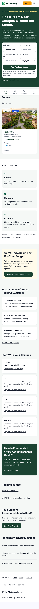

HousePlug visual comparisonHousePlug — original, current preview code, restored
Local browser screenshots with synthetic listing data. The historical design contains old claims and split labels; those remain suppressed in the restored page. Open any screenshot for full resolution.
Original working designCommit 5fbba2e · reference onlyCurrent preview codeCommit 2373a5a · before restoration
Restored designVisual restoration branch